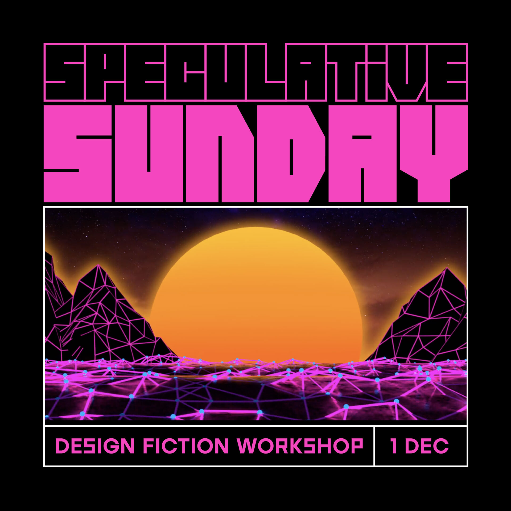
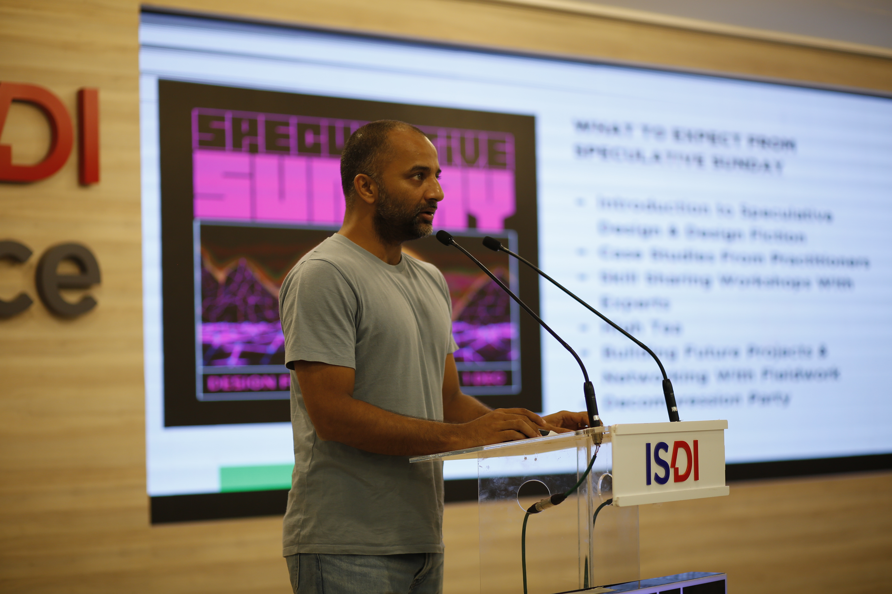
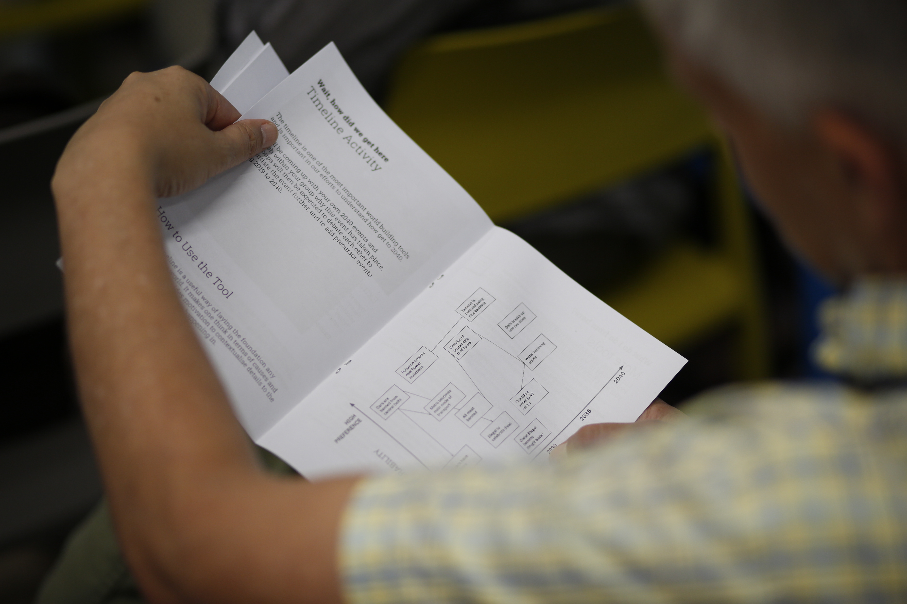
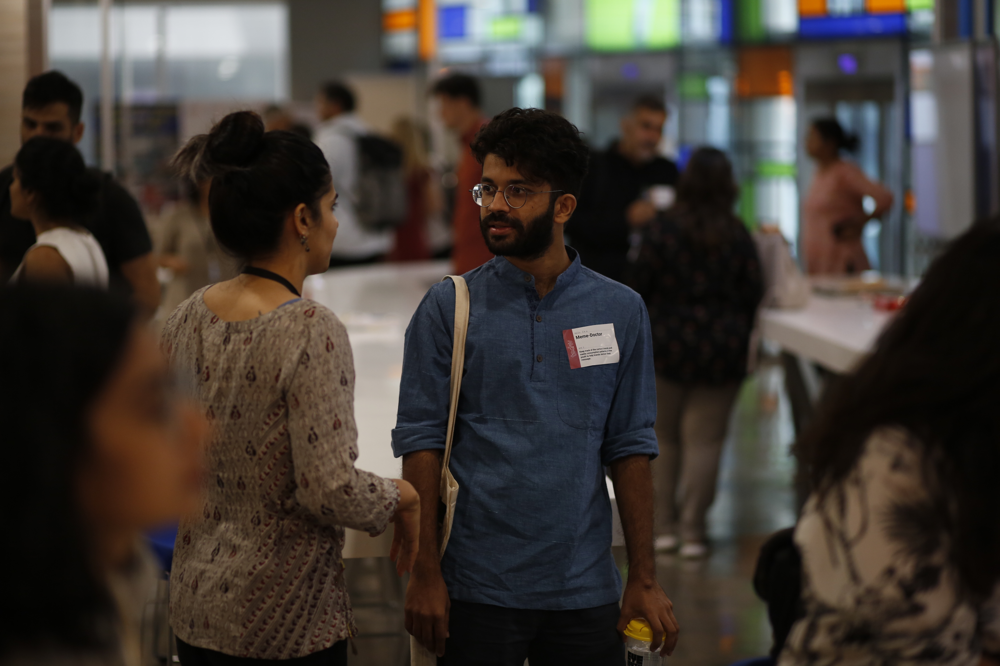
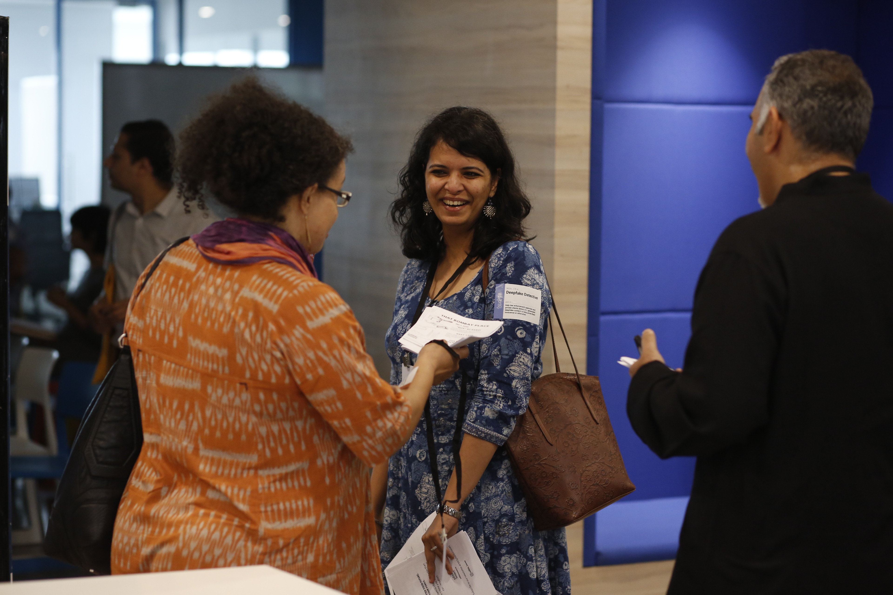
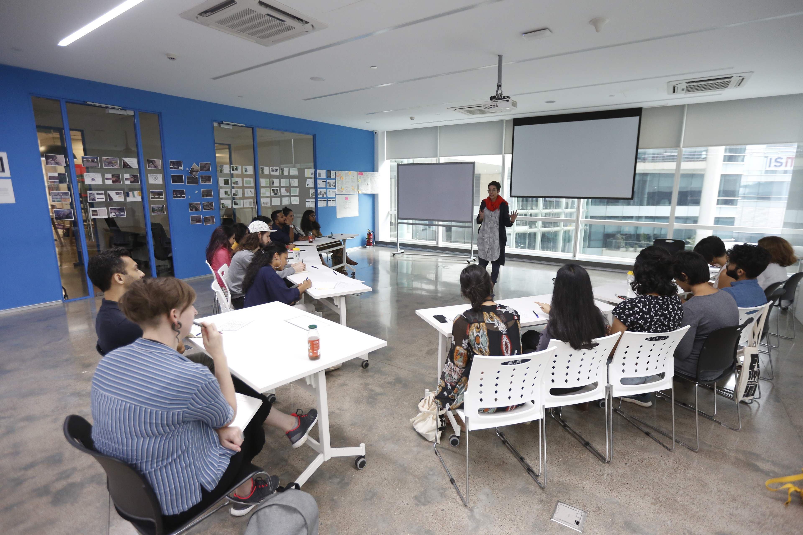
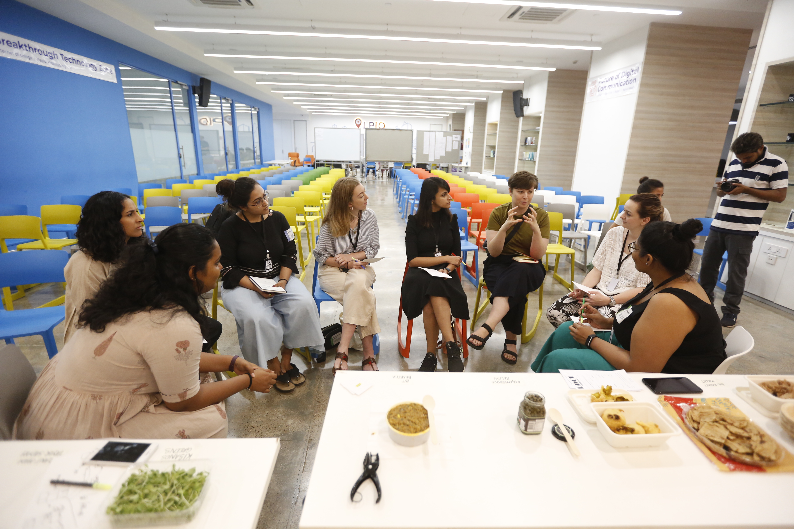
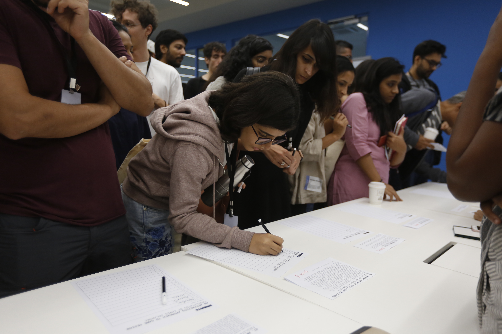
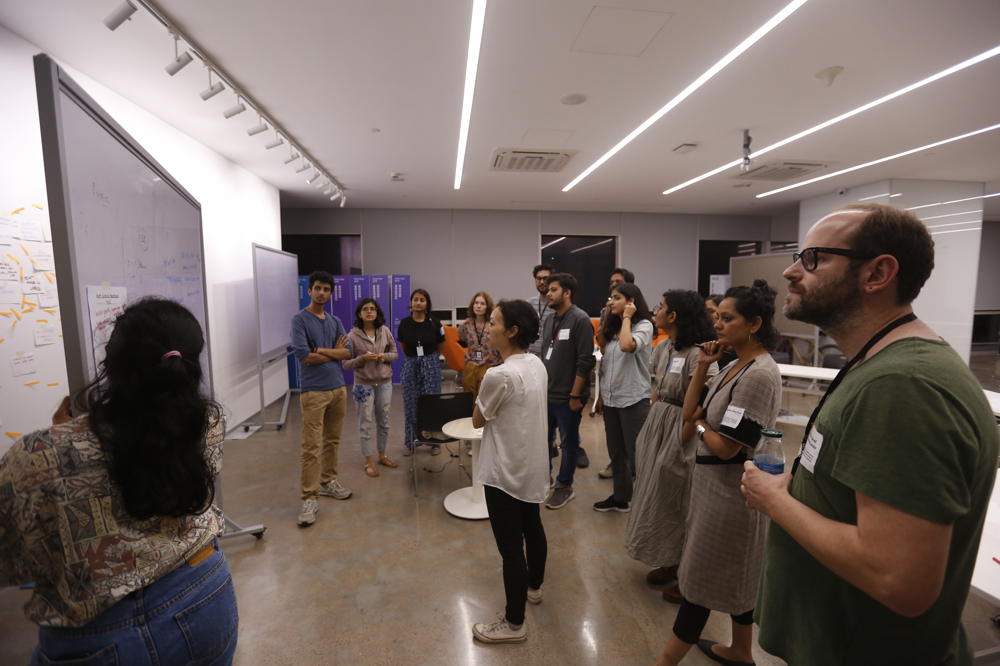

Speculative Sunday
Overview
A day of hands on workshops at EyeMyth to visualise radical cultural futures for India
Role
Lead Planner and Facilitator
For
EyeMyth Media Arts Festival
EyeMyth is the only Media Arts Festival in India - unique in its intersection of Indian and Global art, culture and technology. A 3-day festival which took place from November 29th to December 1st 2019, the third day, called Speculative Sunday was devoted to speculating the cultural futures of India.


Speculative Sunday is a day devoted to hands-on workshops that visualise radical cultural futures for India, while learning new skills in Speculative Design & Design Fiction. I was in charge of the entire day of the festival, which meant planning and designing everything from production, activities, people, to food, permissions and transport. With over a 100+ attendees, the day was a success and lots of learnings were gleaned from the day.

Avinash opening the day with an introduction to speculative design
The success of Speculative Sunday was entirely down to the team which behind the larger EyeMyth Media Arts Festival, and I was very fortunate to have gotten the opportunity to work with them to design this day.

Attendees browsing the speculative toolkits given to them

Kickinng off introductions with speculative job titles


A workshop on developing and delivering Art-Design-Technology Projects of the Future by Dr. Betty Sargeant

Edible Issues taking a workshop on the future of food in India

Attendees signing up for workshops

Speculative Design workshops led by Quicksand team members
The day started with ‘Bhavishya Bhojanalaya’ - a futuristic brunch curated by India’s leading food provocateur and chef Gresham Fernandes in collaboration with ‘The Good Slice’.
Next up, a unique, fast-paced co-creation workshop on ‘Speculative Design’ - an increasingly in-demand global skillset for creatives. 20 groups led by expert facilitators on a hands-on, co-creation journeys into the future of Mumbai and India in 2040.
Supported by : British Council, Pro Helvetia Swiss Arts Council, Social